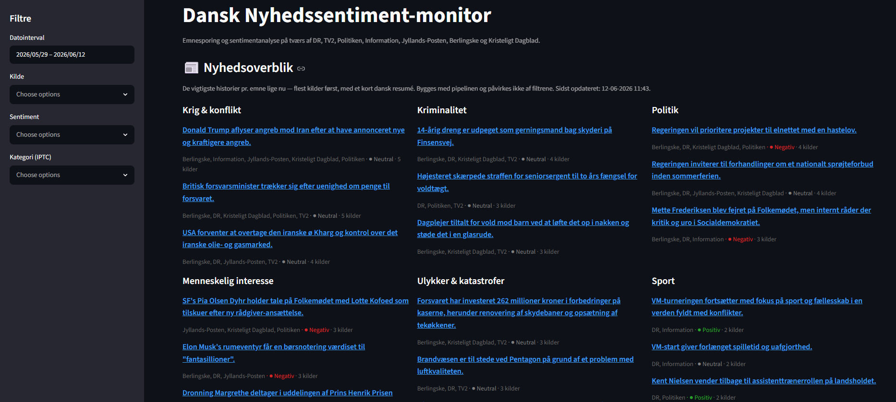
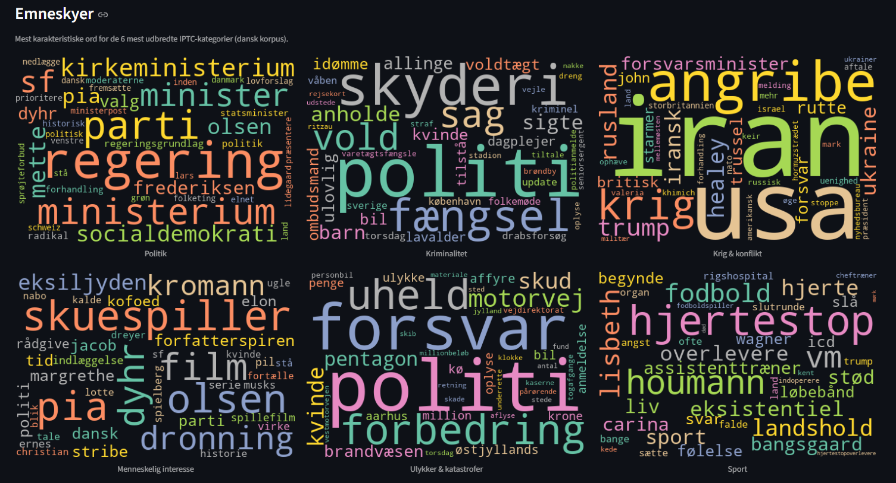
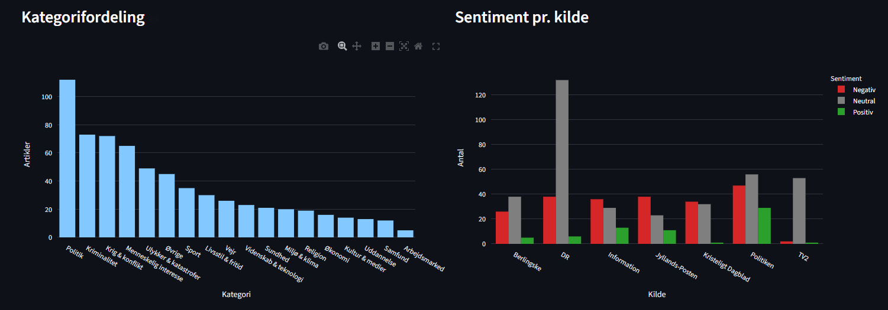
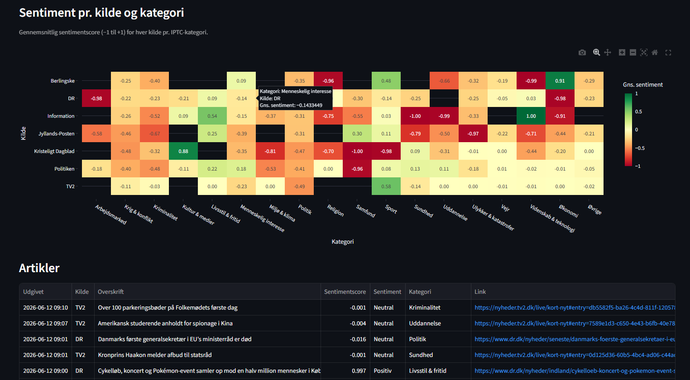

Danish News Sentiment Monitor
Overview
A live dashboard that keeps an eye on the Danish news cycle. Every couple of hours it gathers fresh headlines and short summaries from seven of the country's biggest news outlets, works out what each story is about, and measures its tone — positive, neutral or negative. The result is a single screen that answers a simple question: which topics are dominating Danish news right now, and how does the mood compare across outlets? Everything is done directly on the Danish text, with no translation step in between.
How It Works
- Collects headlines and summaries from seven Danish outlets — five through their public news feeds, and two (DR and TV2) by reading the data their own pages already carry
- Cleans up each story, removes duplicates, and saves everything to a cloud database so the history builds up over time
- Scores the tone of every story with a Danish language model that labels it positive, neutral or negative
- Sorts each story into one of 17 standard news categories (politics, crime, sport, economy and so on) by comparing its meaning to each category — no manual rules required
- Writes a one-sentence plain-Danish summary of each top story using a language model that runs entirely on the local machine
- Refreshes the whole pipeline automatically every couple of hours so the dashboard always reflects the latest news
Built With
 Python
Python
 Hugging Face
Hugging Face
 scikit-learn
scikit-learn
 PostgreSQL
PostgreSQL
 Streamlit
Streamlit
 Plotly
Plotly
 Ollama
Ollama
 pandas
pandas
What the Dashboard Shows
- News overview: a banner across the top with the day's biggest stories, each boiled down to one plain-Danish sentence.
- Topic word clouds: the words that most define each category, so you can see at a glance what's driving the politics, crime or sport coverage.
- Category breakdown: a chart showing which topics are getting the most coverage right now.
- Sentiment by source: a side-by-side comparison of how positive or negative each outlet's coverage tends to be.
- Heatmap and article table: a colour grid of average mood for every source and topic, plus a searchable, filterable list of the underlying articles with links back to the originals.
Screenshots




News Sources
The monitor follows seven national outlets: Politiken, Information, Jyllands-Posten, Berlingske and Kristeligt Dagblad through their public news feeds, plus DR and TV2, which no longer offer a usable feed and are instead read straight from the data their own pages publish. A start-up health check pings every source, so a broken feed shows up immediately rather than quietly dropping out.
Questions It Answers
- Which topics are dominating Danish news today, and how has that shifted over the past week?
- Which outlets tend to publish the most negative — or the most positive — coverage?
- Is the mood around a given topic consistent across outlets, or does coverage diverge?
- Which topics suddenly spike — and is one outlet driving it, or all of them at once?